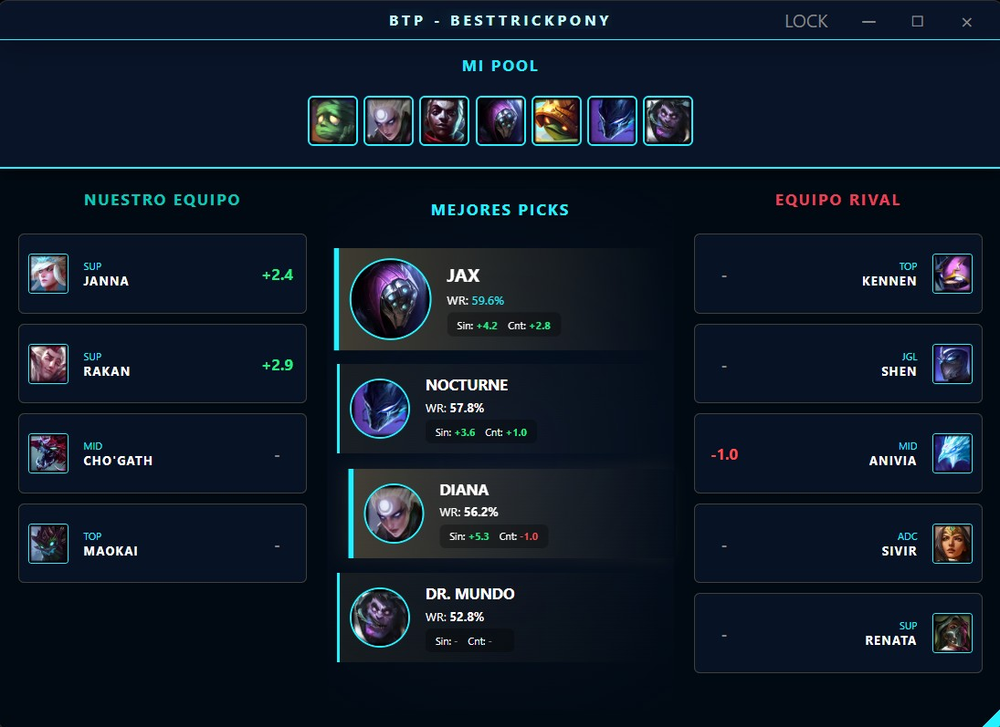
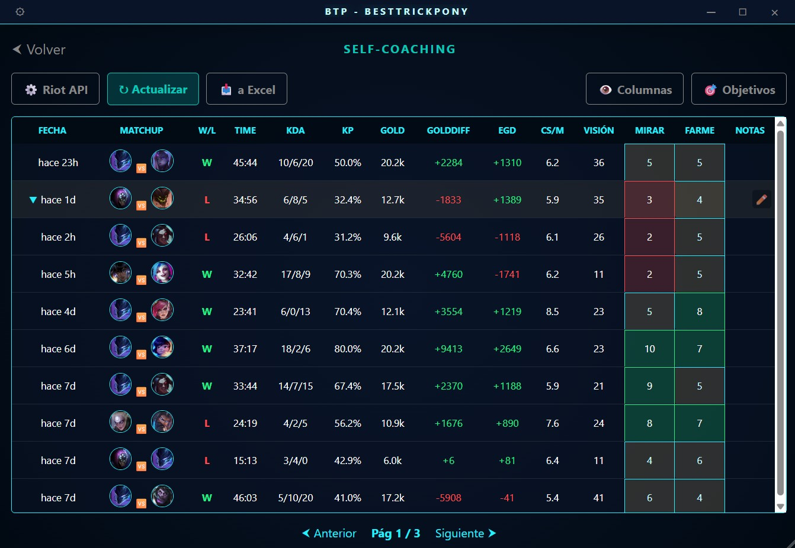

BEST TRICK PONY
El asistente de Draft y Game-Tracking definitivo. No es IA, es matemática pura. Diseñada para jugadores que buscan la maestría a través de datos que TÚ interpretas.

El asistente de Draft y Game-Tracking definitivo. No es IA, es matemática pura. Diseñada para jugadores que buscan la maestría a través de datos que TÚ interpretas.

BTP te muestra datos estadísticos matemáticos puros extraídos de partidas de High ELO. No utilizamos algoritmos "Caja Negra" de IA.
Te proporcionamos la información empírica para que TÚ, como jugador experto de tu Champion Pool, puedas interpretar el mejor curso de acción.
El game-tracker de BTP está diseñado para mejorar tu "Macrogaming-Awareness". Estar atento a tus propios objetivos (Vision, CS, Mapa) y puntuarlos segundos después de que explote el Nexo es clave para tu mejora.
Nuestra filosofía es el Self-Coaching Silencioso.
Creemos en el empoderamiento del usuario. El objetivo de BTP no es darte una lista de normas estrictas que seguir ciegamente.
BTP es una brújula dinámica que te ayuda a elegir una opción lógica entre todas las disponibles basadas en datos empíricos.
Actualmente nos encontramos en una fase Beta Cerrada. BTP ha procesado SOLO 10,000 partidas para este prototipo.
La información estadística mostrada es meramente experimental y todavía poco relevante. Se ruega a los usuarios no seguir estos datos ciegamente para juegos competitivos mientras validamos el modelo.
Creemos firmemente que la mejor recomendación es la que se basa en lo que tú sabes jugar. De nada sirve que el meta dicte un campeón si no conoces sus mecánicas.
Construye tu lista de confort en los roles que juegas y BTP cruzará las matemáticas con tu habilidad real.
¿Quieres salirte del guion? ¡PUEDES ACTIVAR EL MODO ALL CHAMPS! ;)

La mejora continua requiere registro. Observa tus estadísticas, analiza tus sensaciones con el mini-popup post-partida y descubre en qué áreas (farm, visión, mentalidad) estás brillando o fallando.
Fase Beta Activa: Usa tu propia API Key de Riot para sincronizar tu historial al instante. Esta configuración manual es temporal; nos encontramos a la espera de una clave de producción oficial para automatizar este paso a todos los usuarios.
